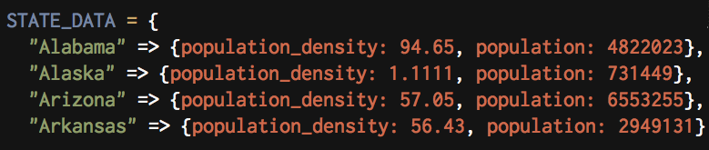
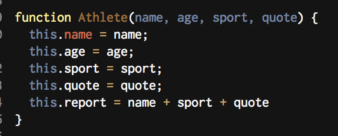

JavaScript Object & Ruby Hashes
So when you look at a JavaScript object, you might think to yourself "Oh look, it's a Ruby Hash!" and you're not entirely wrong, but you're not entirely right either.
Now The first thing I want to note, but did not include, is that the ruby object coulde have been written to look nearly identical. It could have been writtten more like so (focus on the curly brackets):

If you take away the color differences, they do now look very similar. So let's focus on the differences to make some distinctions.
JavaScript objects can contain functions. A Ruby hash cannot contain a function. This is a pretty drastic difference, as it allows certain datatypes to be allowed in Javascript objects that aren't allowed in Ruby hashes. Javascript Objects allow for dot notation where as Ruby hashes do not. So for the above examples (which may look familiar to my fellow island foxes) you can call STATE_DATA["Alabama"]; but in JavaScript you can call terah.name. JavaScript does allow you to call terah["name"] if you so choose, but dot notation can be easier to work with(in this given example). Objects can also be designed using constructors. A constructor looks like this:

This notation makes a JavaScript (aesthetically speaking) resemble a Ruby Class, and that's another key to note. Objects in Javascript have more flexibility than Ruby's hashes becuase that's how each language works.JavaScript has less built in methods, which means allows for a lot of customization.
As a final note, our introduction to objects initially did make them seem similar to Ruby hashes, however as the week went on, they came to start resembling classes. The best frame of mine to look at a JavaScript object in my experience (albeit limited experience) is just that. View it as an object, and treat it as such. Determine what the object does and what you need it to do, and it'll be much easier to work with.
Here is a parting joke from XKCD, since I mentioned constructors.